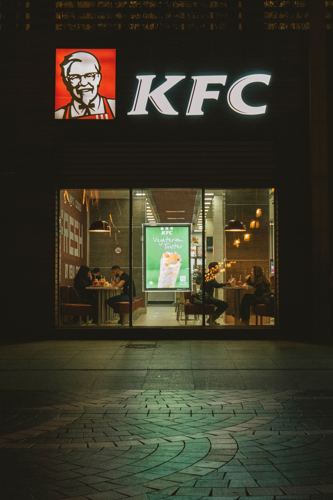
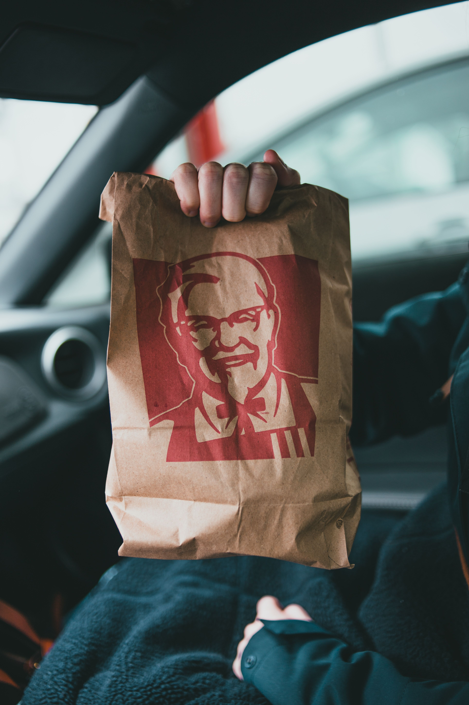
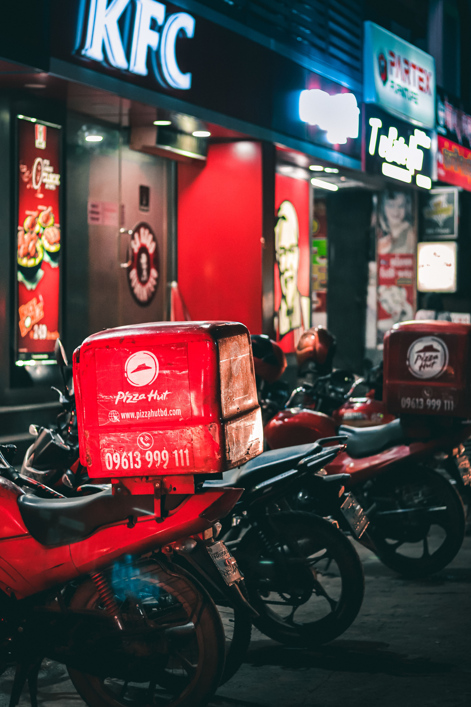
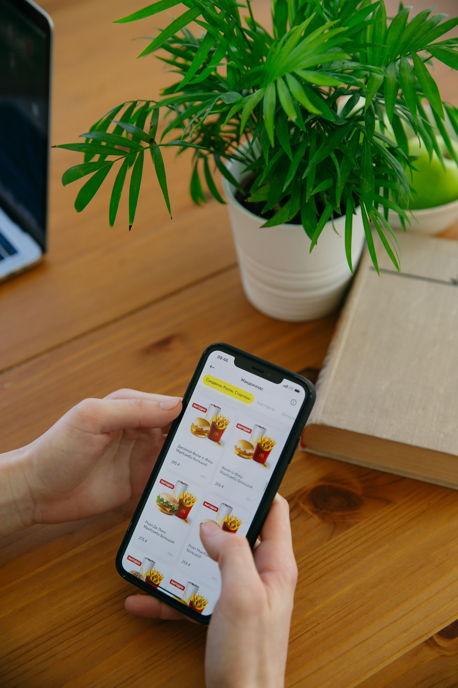
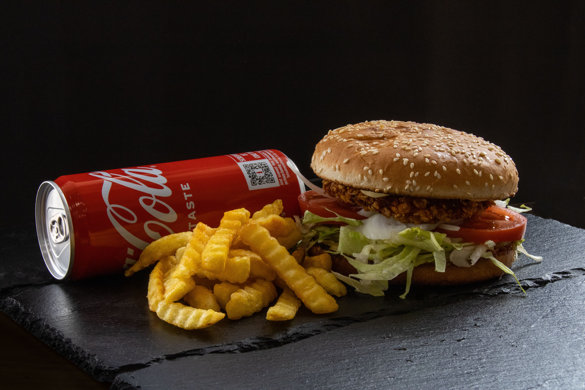

Our Services
At KFC, we provide a variety of food and dining services designed to make it easy and convenient for our customers to enjoy their favourite meals.
From dining in our restaurants to ordering food for delivery, customers can choose the service that best suits their needs.
Dine-In

Customers can visit a KFC restaurant and enjoy their meals in a comfortable dining environment. Our restaurants provide seating areas where individuals, friends and families can enjoy their food.
Customers can order their meals at the counter and choose from a wide selection of chicken meals, burgers, wraps, sides, desserts and beverages.
Takeaway

KFC offers takeaway services for customers who prefer to enjoy their meals somewhere else. Customers can place their order at the restaurant and collect their food when it is ready.
Takeaway is a convenient option for customers who are travelling, working, studying or simply want to enjoy their KFC meal at home.
Food Delivery

Customers can order KFC meals for delivery and have their food brought directly to their chosen location, where the service is available.
Delivery provides customers with a convenient way to enjoy their favourite KFC meals without having to visit a restaurant.
Online Ordering

Customers can browse the available menu and place food orders online. Online ordering allows customers to select their preferred meals before completing their order.
This service makes ordering food easier and can help customers save time when collecting their meals or receiving a delivery.
Catering and Group Meals

KFC offers meal options that are suitable for families, groups and social occasions. Customers can choose larger meal combinations when ordering food for several people.
These options are suitable for family gatherings, celebrations, parties and other occasions where customers need food for a group.
Customer Service
KFC provides customer service to assist customers with questions, enquiries, orders and feedback.
Our team aims to provide friendly and helpful service while ensuring that customers have a positive experience when interacting with KFC.
Ready to Enjoy KFC?
Explore our menu and choose your favourite KFC meal today.